Master System - Enduro Racer, o jogo mais cortado de todos
 :::. Por Milles
:::. Por Milles
Enduro Racer é um jogo de motocross criado pela Sega e lançado para Arcades em 1987, onde você com sua moto tem o objetivo de chegar ao final do enduro.
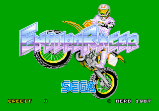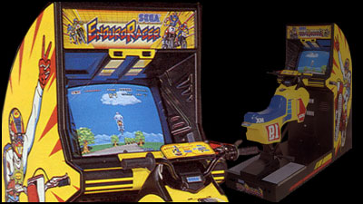
Após um tempo depois viria o Sega Master System, e como a Sega não possuia
muito apoio das outras empresas, tinha a meta de fazer jogos
exclusivos ao seu videogame de 8bits e lançar conversões de arcade. Devido a
limitação de especificações entre a placa de arcade e o Master System,
muitos jogos eram refeitos do zero, tentando se aproximar ao maximo do
original.
Vale
citar que este jogo tambem fez uma ponta no filme "Namorada de Aluguel"
tradicional filme repetido na Sessão da Tarde, onde os dois atores
principais em uma das cenas do filme, discutem no fliperama pelo motivo
de um ter jogado cocô na porta da casa do outro, e um deles esta jogando
a maquina Enduro Racer.
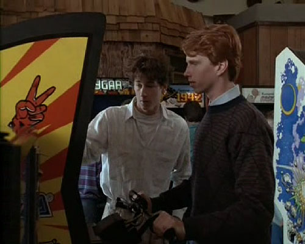
No caso do Enduro Racer para Master System, o jogo foi todo refeito e
somente a idéia do jogo foi aproveitada (correr um enduro de motocross
ate a fase final).
O misterio dos cortes
Algo na versão Master System chama muita atenção, os grande cortes que a versão americana (incluindo a TecToy) recebeu em relação a versão original japonesa. Fases, detalhes, mapa, ordem das sases e final, foram simplesmente tirados ou modificados na versão Americana! Levando-se em conta que mesmo a versão original sendo em japonês, tudo no jogo que havia texto estava em inglês, por isso não seria esse o motivo dos cortes, como tambem nao havia ideologia, violência ou ofensa a nada. Aqui vão algumas fotos comparativas, versão japonesa à esquerda e versão americana à direita:
Primeira fase
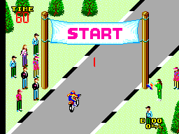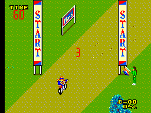
Detalhes da mesma fase
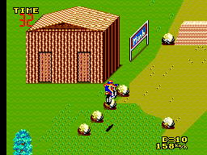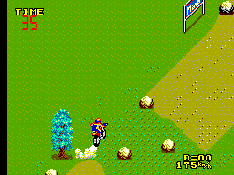
A tela de titulo teve essa imagem cortada, e vem com efeito de troca de cores
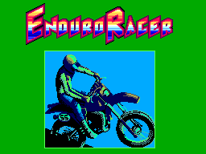
Fases que não estão na versão americana
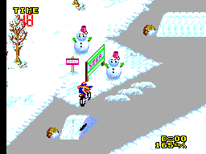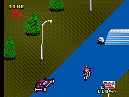
Mapa retirado da versão americana
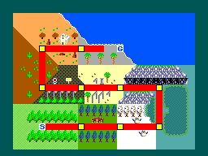
A japonesa tem 10 fases diferentes que se repetem, a americana só tem 5 fases que tambem se repetem. O final da versão americana é diferente da versão japonesa, particularmente pode ser saudosismo meu mas prefiro o da versão americana devido a mensagem que passa ao jogador (jogue para saber qual é, vale a pena).
Finalizando
Não
entendo o motivo de tantos cortes pois a americana perdeu e
muito com isso, poderia ter marcado muito mais este jogo que conheci com a
fita Box Serie Corridas (que tambem acompanhava Super Monaco GP e Grand
Prix). Somente descobri a diferença graças à algumas fotos mostradas no site smspower SMS Power,
até imaginei que fosse uma sequência não
lançada na america do Enduro Racer, porém uma parte da
verdade veio a tona, a dos cortes.
Acesse o Trombone e comente sobre essa matéria!


Um dos erros mais imperdoáveis da Sega. Em 90/91 mais ou menos, a Sega ganhou da Tecmo a oportunidade de fazer umas versões do Ninja Gaiden para os seus consoles. Essa chance é comparável ao que Deus fez quando deu o mundo para Adão... bem, o final tanto de Adão quanto da Sega nesse caso são semelhantes.
Albert Odyssey é um dos jogos mais amados pelos fãs do Saturn. Com uma história simples mas rica, dramatica e emocionante, encantou muita gente que naquele inicio da era 32 bits, ainda não estava acostumada com trilha sonora feita com instrumentos de verdade e gráficos cheios de luz e efeitos. Mas, não era para ser assim com esse jogo...